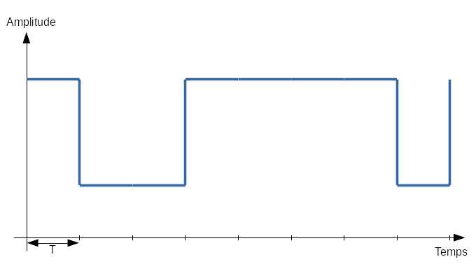

Wanna TEMPEST your computer?
Étape 2
Nous avons pu observer à l'étape 1 que certaines activités sur l'ordinateur provoquaient une variation significative du spectre.
L'idée que nous allons maintenant développer jusqu'à la fin du challenge est la suivante : comme nous pouvons provoquer et contrôler une activité électromagnétique sur l'ordinateur et que celle-ci peut être observée par l'intermédiaire d'un récepteur, il nous est alors possible de créer un signal dans lequel seront codées certaines informations que nous souhaitons extraire de l'ordinateur.
Avant toute chose, nous devons trouver une activité émettant une onde électromagnétique de façon significative. C'est pour cette raison que nous allons décrire les architectures mémoire à multiples canaux.
Architecture mémoire à multiples canaux
 Architecture d'une carte mère (source Wikipedia) |
Le contrôleur de mémoire (encore appelé Northbridge) est un composant de la carte mère relié au microprocesseur. Il est notamment en charge de fournir au CPU les données présentes en mémoire (RAM). La transmission de ces données entre la RAM et le contrôleur mémoire se fait par l'intermédiaire du bus de données qui a généralement une taille de 64 bits sur les ordinateurs actuels. Cela signifie que 64 bits de données peuvent être transférés entre le contrôleur mémoire et la RAM en un seul coup d'horloge du processeur. Comme la taille de ce bus détermine en partie les vitesse d'entrée/sortie en RAM, les constructeurs de microprocesseurs (AMD et Intel) ont cherché à améliorer les performances de ce système. |
Dans cette perspective d'amélioration des performances, l'idée a été d'utiliser deux barrettes de RAM identiques pour agrandir le bus mémoire. Comme on peut le voir sur la figure ci-contre, ce mécanisme permet ainsi d'obtenir un bus de données de 128 bits. Les constructeurs ont étendu ce principe à trois et quatre canaux, permettant d'obtenir des bus de données d'une taille respective de 192 et 256 bits. Aujourd'hui, la plupart des ordinateurs sont compatibles avec les architectures à multiples canaux. On peut déjà voir que ce type de mécanisme, même s'il augmente la vitesse d'entrée/sortie en mémoire, est gourmand en énergie. En effet, il mobilise à chaque coup d'horloge presque deux fois plus de ressources matérielles que dans le cas d'un simple canal. On sait maintenant que cela pourra potentiellement avoir des conséquences sur les émissions électromagnétiques de l'ordinateur. Si vous avez compris les architectures à multiples canaux, voyons maintenant comment le processeur peut directement mettre en œuvre le mécanisme. |
 Architecture mono-canal |
Architecture multi-canal |
L'instruction MOVNTDQ
Du fait des mécanismes de cache et d'optimisation mis en place par le processeur, on ne peut être certain qu'une activité aura toujours lieu sur le bus de données. Or une telle activité est nécessaire pour potentiellement obtenir l'émission d'une onde électromagnétique significative.
Heureusement, il existe des instructions liées aux processeurs modernes permettant d'activer une lecture/écriture directement depuis/vers la RAM et ce sans utiliser les mécanismes de cache. C'est par exemple le cas de l'instruction MOVNTDQ m128,xmm dont le but est de directement déplacer 128 bits de données présentes dans un registre xmm vers une zone mémoire spécifiée.
Au delà de la non utilisation des caches, cette instruction tirera avantage de l'existence de multiples canaux afin d'effectuer l'opération en un seul coup d'horloge : un double canal présent sur la machine sera donc entièrement utilisé pour déplacer ces 128 bits de données vers la RAM en un unique coup d'horloge.
Résumons un peu...
Nous venons de voir deux choses importantes :
- Les architectures à multiples canaux génèrent potentiellement des émissions électromagnétiques significatives
- L'instruction MOVNTDQ du processeur permet de mettre en œuvre une activité sur le bus de données en utilisant les canaux multiples
Que pouvons nous faire maintenant pour vérifier ces deux points?
RienRéaliser un programme en C qui écrit des données en mémoire et voir avec l'analyseur de spectre si une émission significative a lieu
Réaliser un programme Python qui écrit des données en mémoire et voir avec l'analyseur de spectre si une émission significative a lieu
Chercher plus d'informations sur Internet parce qu'on ne comprend pas où les créateurs du challenge veulent en venir
L'idée maintenant est d'utiliser les fonctions assembleur du langage C pour mettre en œuvre une écriture en mémoire.
Voici le code C de la fonction mettant en œuvre certaines instructions assembleur. Complétez l'instruction manquante :
void mov_data(int * data_ptr,char * buffer_ptr )
{
__asm("movq %0,%%xmm0\n" //Écriture dans xmm0 de 64 bits de données
:
:"m" (*data_ptr)
:"%xmm0");
__asm("movq %0,%%xmm1\n" //Écriture dans xmm1 de 64 bits de données
:
:"m" (*(data_ptr+8))
:"%xmm1");
__asm("movlhps %xmm1,%xmm0\n"); //128 bits de données dans xmm0
__asm(" %%xmm0,%0\n" : "=m"(*buffer_ptr));
}
Mise en œuvre
Maintenant que nous avons une fonction réalisant une activité sur le bus de données, vérifions que celle-ci provoque des émissions électromagnétiques significatives. Il faudra pour cela parcourir le spectre de fréquences grâce à la fonction analyseur de spectre d'URH.
Indication
Positionnez l'antenne du récepteur à proximité du PC. Parcourez le spectre entre 100MHz et 400MHz. En effet, si une émissions électromagnétique peut être observée, la fréquence de celle-ci se situera aux alentours de la fréquence d'entrée/sortie du bus de données.
La fréquence des barrettes de RAM étant de 400MHz, les écritures en mémoire ne pourront donc pas se faire à une fréquence supérieure.
Lancez le programme mov_data1.c sur le PC attaqué. Ce programme réalise successivement les opérations suivantes :
- Écriture de données en RAM pendant une période d'une seconde;
- Aucune activité pendant une période d'une seconde.
Ainsi, nous devrions observer en alternance une activité et une non-activité à une certaine fréquence.
À vous !
À quelle fréquence le signal est-il émis ?
Encodage de l'information
Nous venons de voir que nous observons une émission électromagnétique autour de 200MHz. Des mesures plus précises nous permettent de savoir que la plus grande amplitude est obtenue à exactement 201,1MHz.
En enregistrant le signal, toujours avec URH, nous obtenons la représentation temporelle suivante :
On remarque de façon évidente les variations régulières d'amplitude qui correspondent aux variations d'activité sur le bus de données que nous avons créées.
L'idée est alors d'utiliser ces variations pour coder de l'information : c'est ce qu'on appelle l'étape de modulation.
La technique de modulation que nous allons utiliser ici sera Amplitude-shift keying (ASK). L'idée ici est d'utiliser les variations d'amplitude d'une onde porteuse pour coder de l'information. Comme nous souhaitons coder une information numérique et la transmettre bit par bit, seuls deux niveaux d'amplitude sont nécessaires : une amplitude haute correspondra à un 1 binaire et une amplitude basse correspondra à un 0 binaire. On parle alors de modulation Binary-ASK (B-ASK) ou encore de On-off keying (OOK).
Ainsi, dans le cadre des émissions que nous contrôlons, il suffira de transmettre de l'information pendant une période T sur le bus de données pour obtenir une amplitude haute et coder un 1. Aucune transmission d'information pendant une période T nous permettra d'obtenir une fréquence basse et de coder un 0.
Can I ASK you a question?
La lettre a dans la table ASCII est représentée en binaire par 01100001. Selon la règle de modulation ASK telle que nous l'avons décrite ci-dessus, quel signal ci-dessous correspond à l'envoi de la lettre a?
|  a |
b |
c |
d |
On sait maintenant comment créer un canal caché pour exfiltrer de l'information d'un ordinateur. Voyons maintenant comment réceptionner le signal sur une autre machine.